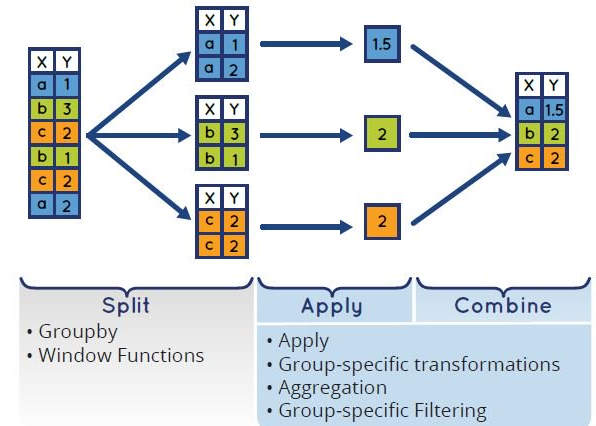

class: cloudtitle,center, middle # Overview of Big Data with Spark for For Researchers ### Pat Bills, IT Services ADS for the [MSU Cloud Fellowship](../session_big_data) --- # Why are we talking about Data and not cloud? *this is not the "Data Fellowship"* - we all have data to deal with - a common research struggle is working with data too large for your machine. - Big data tools can offer a solution - cloud computing offers Big Data tools "as a service" - without cloud these systems require a collection of hards, a month of installation, infrastructure expertise - Big data tools are becoming commonplace for data science - Potential gateway to whole new realm of solutions for parallelizing your work  *Image by Alexander Sinn on Unsplash* --- # Why are we talking about Data and not cloud? - is it applicable to every problem? no. - do you need to use big data for your project? no. - is it worth learning at least the principles. yes, similar to cloud computing - for some of your research this could be a game-changer - **Session Goal:** understand the principles, and some idea of what's involved to deploy and use --- # Ways that our data can be 'too big' - not enough storage space - doessn't fit on disk - not enough workspace - can't fit into memory - not enough time - calculations or combinatorial work too slow Doug Laney in 2001 and [Gartner 2011](https://www.gartner.com/en/information-technology/glossary/big-data) define "Big Data" as having one of - **Volume**: too much data to house or process using commodity hardware and software. - **Velocity**: new data arrive too quickly to manage or analyze or analysis - **Variety**: so much variation in data records or too many diverse sources, e.g. not rigidly structured. --- # Some solutions to the 'too big for machine' problem <img src="img/smallbox_bigcat.jpg" width="250px" align="right"> **why couldn't I just just get a bigger box ? ** Cost for large VM does not go up linearly and these are expensive: - high memory - many-core count (e.g. use your language built-in parallel methods) - large disk systems to attach to the VM - your time to configure/setup is valuable --- # Some solutions to the 'too big for machine' problem Take smaller bites - split the data up and work with some at time - work with only the most interesting subset - use a data system such as a Relational Database Server - use a tool that combines these techniques --- # Parallel Data Analysis - dividing up work and process concurrently is the core of what these tools do - parallel techniquees are important even for storage: - storing data across hundreds of disks. - there are othre forms of parallel computing but that's beyond the scope, e.g. HPC --- # DIY Parallelism - so-called "Data parallelism" using the "split-apply-combine" strategy - labor intensive: - manage data & partitions - manage worker machines - coordinate (orchestration) - handle failures - for really BIG DATA may not be possible  --- # DIY Parallelism Recipe - adapt your code to process partitions - e.g. given subset of row numbers, reads in just rows andd calculate summaries - create an index of partitions (eg. each partition could have a lits of the row numbers) - create a new machine for each parallel worker you want to use, copy the software to each - for each partition - send the partition index to one of the workers, - or have the worker check which piece needs doing next - the worker reads and processes the rows it was given, then writes an output file (output01.txt) - until all partitions are processed - combine all of the output files into one complete output file --- # Big Data Tools: what's the big deal? ### innovations: - optimize data movement in network - data partitioned across machines, operate data near machine - works on "commodity hardware" not expensive HPC - open source => democratized --- # Big Data Tools Ecosystem The history of big data tools starts at Google, who published papers on thier systms, and others who create open source software projects based on those papers, an other academic groups (e.g. Amplab Stanford) The history is not important, just common "big data" terms: - "Map Reduce" algorithm publication by Jeff Dean/Google based on their distributed file system - "Hadoop" was the first implementation of MapReduce. Still widely used in businesses - "HDFS" cluster file system invented with Hadoop, and required for Hadoop to use - "Apache Spark" project general purpose, not limited to MapReduce, doesn't require HDFS, multi-language --- # Spark : "Unified analytics engine" - general purpose parallel storage and execution system - within a Spark system you set up data sources, clusters of computing, and run special versions of libraries designed for parallel exectution - can work with several storage systems including cloud storage - you provide the code, Spark evaluates and forms a parallel execution plan - automatically partitions the data, and can automatically - code can be R, Python, SQL, or Scala (a version of Java) - you can interact using Notebook, or with a remote connection <br> *Sorting distributed data with Apache Spark, from Mastering Spark with R* --- # DataBricks == Spark "Pro" - Databricks **company** started by Spark inventors - Databricks **product** packages Spark with robust web interface and connections - Azure Databricks **service** easy to deploy databricks with all details taken care of for you - there are similar versions for AWS and Google Cloud - Has a really convenient web and notebook interface for immediate and interactive cluster computing - To use Spark, you first need to build a cluster of computers and install it - Databricks is parent service that runs a web interface from you which you can create clusters on demand - Takes care of creating & configuring all Azure resources --- # Databricks Introduction Video Two videos linked Link to Video introduction and walk through from Doug Krum, MSU IT Services Data Architect in our session  --- # Notes on Using Databricks - Designed for one Databricks for many users: - an IT Administrator sets up the service for users to log-in and use (data analysts) could log-in and use the service - we can still use it on as a single researcher for interactive work - This is the first "platform as a service" system - all resources are created and destroy automatically for you - creates a special resource group Databricks uses to put resources - if you are not use it for computation, there are no VMs & Disks hanging around --- # Other Azure tools for parallel work **[List of Analytics Services from Azure](https://azure.microsoft.com/en-us/product-categories/analytics/)** - VM 'scale sets' : launch dozens of identical VMS from an image - Azure Batch: build a pool of works from a container - has a management tool called "ship yard" - could build and run a DIY spark cluster on this - HPC in the cloud : cycle cloud - HD Insight : Hadoop/Spark (old school big data) --- # Other Tools may be enough - relational database managment systems (RDBMS) were designed to proceess millions of rows of tabular data in seconds with very small memory. - Like DataBricks, Data is processed on the database server, not your computer - Azure offers several open source RDBMS systems - We will cover relational databases in a later session --- # Questions?  ---